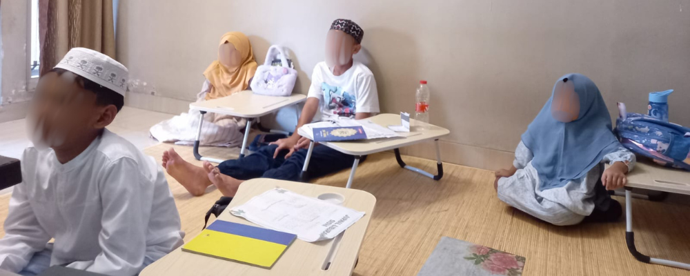
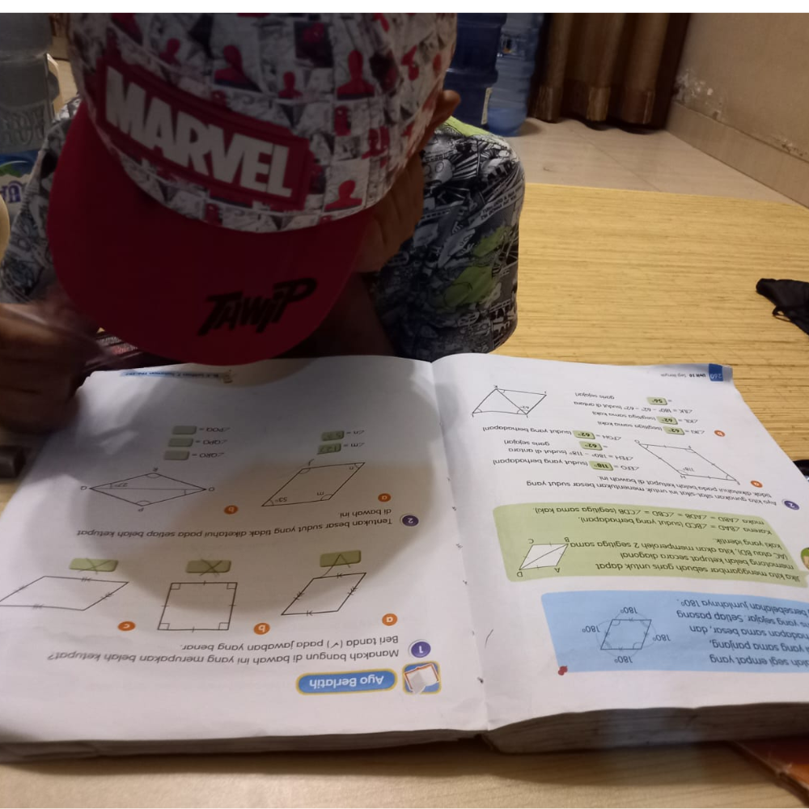
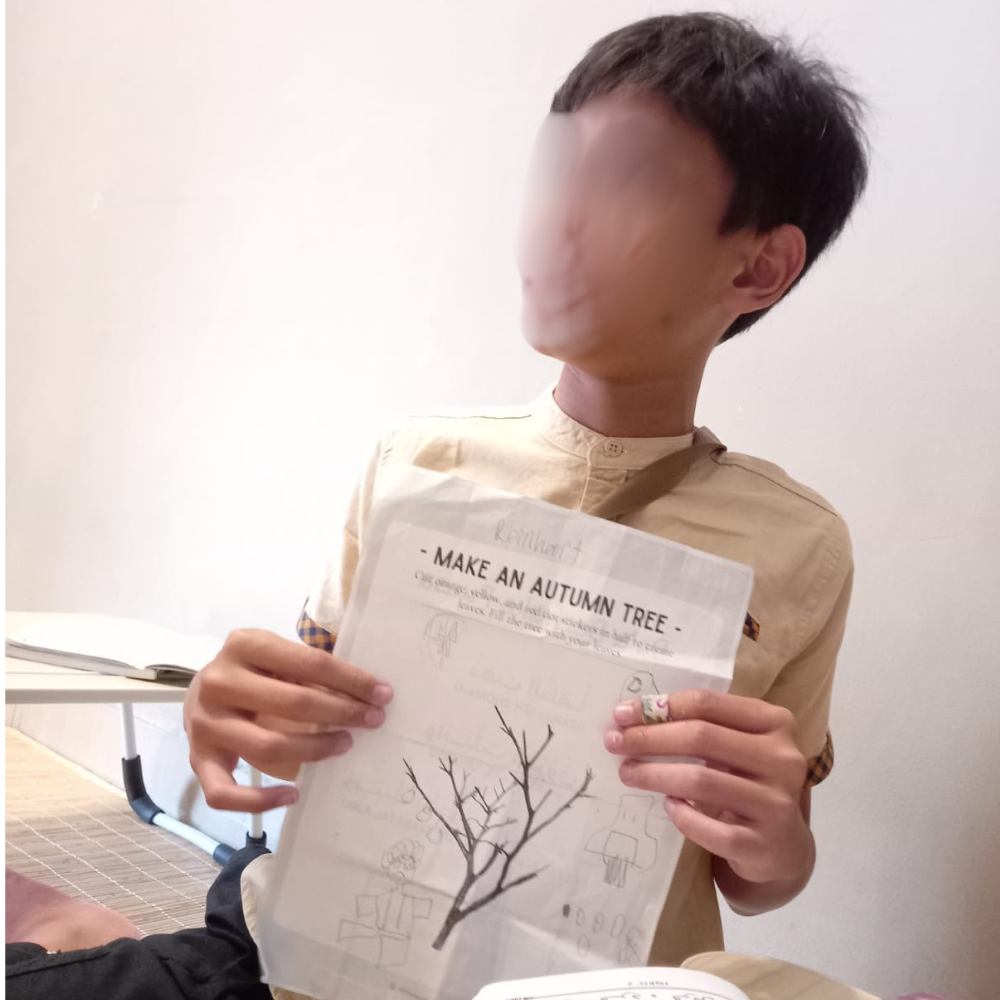
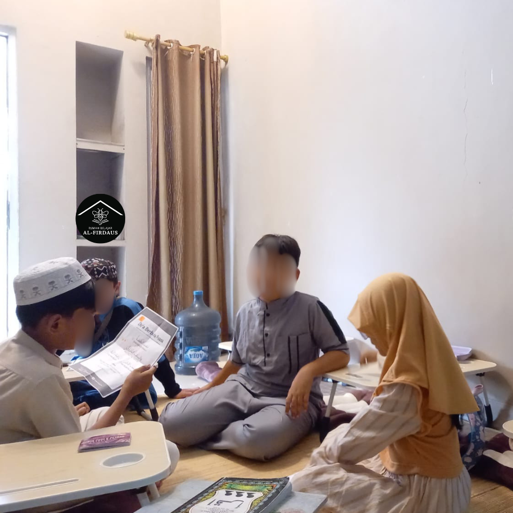

Mengukir Prestasi Akademis, Membangun Generasi Berakhlak Mulia
Platform edukasi interaktif untuk Bimbingan Akademik, Calistung, Mengaji, Belajar Al-Qur'an, dan Perbaikan Bacaan Al-Qur'an sesuai dengan kebutuhan siswa.

Mulai Belajar Sekarang

Profil Rumah Belajar Al-Firdaus (beetah.id)
Selamat datang di Rumah Belajar Al Firdaus (beetah.id), sebuah bimbingan belajar komprehensif yang berdedikasi untuk mendampingi perjalanan pendidikan keluarga Anda. Meskipun kami melayani pembelajar dari berbagai usia, hati dan fokus utama kami terletak pada masa keemasan perkembangan anak-anak.
Kami menyadari bahwa masa kanak-kanak adalah fondasi paling krusial dalam pembentukan kecerdasan, karakter, dan adab. Memulai pendidikan sejak dini—baik dalam literasi akademis maupun literasi Al-Qur'an—bukanlah sekadar upaya untuk mengejar nilai di sekolah, melainkan sebuah investasi untuk menumbuhkan kebiasaan belajar, rasa ingin tahu, dan kecintaan terhadap ilmu pengetahuan yang akan terus melekat hingga mereka dewasa
Sinergi untuk Generasi Penerus
Kami percaya bahwa kecerdasan akademis yang tinggi harus diimbangi dengan kompas moral yang kuat. Di Rumah Belajar Al Firdaus (beetah.id), putra-putri Anda tidak hanya dibekali ilmu untuk sukses di sekolah, tetapi juga dibekali cahaya Al-Qur'an untuk sukses di kehidupan kelak.
Selain program unggulan untuk anak-anak, kami juga senantiasa membuka pintu bagi pembelajar dewasa yang ingin memulai atau memperbaiki bacaan Al-Qur'an (Iqra, Tajwid, dan Tahsin) melalui pendekatan andragogi yang nyaman dan bebas dari rasa canggung.
Mari tumbuh, belajar, dan meraih keberkahan bersama kami.
Keunggulan Rumah Belajar Al-Firdaus (beetah.id)
Optimalisasi Usia Dini
Kurikulum yang disesuaikan dengan tahap perkembangan kognitif dan psikologis anak untuk hasil belajar yang maksimal.
Metode Berbasis Pemahaman
Pendekatan instruksional yang memastikan anak memahami akar dari setiap mata pelajaran dengan metode yang interaktif, ramah anak, dan tidak membosankan.
Fasilitator Empatik & Kompeten
Pengajar kami dilatih khusus untuk menjadi mentor yang sabar, menciptakan suasana belajar bebas tekanan agar anak termotivasi dari dalam dirinya sendiri.
Fokus Perhatian Personal (Kelas Privat & Grup Kecil)
Kami mengutamakan kualitas interaksi dengan membatasi jumlah kelas grup maksimal hanya 5 peserta didik, serta menyediakan opsi kelas privat. Pendekatan eksklusif ini memastikan setiap siswa mendapatkan alokasi waktu bimbingan yang jauh lebih banyak dan mendalam, memungkinkan pengajar untuk benar-benar mengenali potensi dan gaya belajar tiap individu.
Fleksibilitas Metode Pembelajaran (Online, Offline & In-Home Tutoring)
Mengakomodasi dinamika mobilitas dan kenyamanan keluarga, kami memberikan kebebasan penuh dalam memilih model belajar. Peserta didik dapat belajar secara tatap muka (offline) di fasilitas kami, belajar secara virtual (online), maupun menggunakan layanan eksklusif pengajar datang langsung ke rumah peserta.
Jadwal Belajar yang Sangat Adaptif
Kami menghapus batasan waktu yang kaku. Waktu bimbingan dirancang secara sangat fleksibel, memungkinkan peserta didik untuk belajar kapan saja dan dari mana saja, murni disesuaikan dengan ritme kesibukan serta kesepakatan jadwal yang paling ideal antara siswa dan pengajar
Integrasi Akademis & Karakter
Satu tempat untuk dua kebutuhan utama: keunggulan nilai sekolah dasar dan pemahaman Al-Qur'an yang mendalam disertai dengan pengajaran adab dan akhlaq serta pondasi akidah yang lurus.
Laporan Perkembangan Berkala
Komunikasi transparan dengan orang tua melalui laporan progres belajar rutin, sehingga setiap kemajuan anak dapat dirayakan bersama.
Bilingual (ID/EN)
Pilihan bahasa pengantar Bahasa Indonesia atau Bahasa Inggris sesuai dengan kenyamanan belajar Anda.
Program Kelas Kami
Calistung (Membaca, Menulis, Berhitung)
"Membuka Pintu Gerbang Eksplorasi Ilmu Pengetahuan."
Dirancang khusus untuk usia dini dan transisi menuju sekolah dasar. Program ini tidak sekadar mengejar kemampuan kognitif, tetapi membangun kecintaan anak terhadap proses belajar itu sendiri. Kami menggunakan alat peraga, permainan edukatif, dan teknik bercerita untuk membuat konsep huruf dan angka menjadi nyata dan relevan bagi anak, memastikan mereka memiliki kesiapan mental dan akademis yang paling optimal.
Daftar Kelas IniBimbingan Belajar Akademik
"Pemahaman Konseptual Mendalam, Bukan Sekadar Hafalan."
Bimbingan belajar yang berfokus pada pendalaman materi inti sekolah dasar. Kami membantu siswa memecah topik pelajaran yang rumit menjadi penjelasan eksplanatori yang mudah dicerna. Tujuannya adalah membantu siswa mengerti logika di balik setiap pelajaran, memetakan seberapa jauh pemahaman mereka, dan melatih strategi pemecahan masalah agar siap menghadapi ujian di kelas dengan percaya diri.
Daftar Kelas IniProgram Iqra
"Langkah Pertama yang Menyenangkan Menuju Literasi Al-Qur'an."
Program ini dirancang sebagai fondasi awal pengenalan huruf hijaiah dan tanda baca dasar. Melalui pendekatan instruksional yang bertahap dan interaktif, kami membantu peserta didik (anak-anak maupun dewasa pemula) membangun rasa percaya diri dalam mengeja dan membaca rangkaian huruf tanpa tekanan. Fokus utamanya adalah keakuratan pengucapan dasar sebelum melangkah ke tingkat yang lebih kompleks.
Daftar Kelas IniProgram Tajwid
"Memahami Aturan Presisi untuk Bacaan yang Sempurna."
Peserta didik akan mempelajari teori dan hukum bacaan (nun mati, mim mati, mad, dll). Kami juga membedah spesifik tempat keluarnya huruf (makharijul huruf) dan sifat-sifat huruf (shifathul huruf), sehingga peserta didik benar-benar mengerti "mengapa" dan "bagaimana" suatu huruf dibaca dengan benar.
Daftar Kelas IniProgram Tahsin
"Menghaluskan Lantunan, Memperindah Makna."
Tahsin berfokus pada praktik dan perbaikan bacaan Al-Qur'an. Program ini diperuntukkan bagi mereka yang sudah bisa membaca, namun ingin mengevaluasi dan menilai tingkat kefasihan, ritme, serta kelancaran bacaan agar sesuai dengan standar sanad yang benar. Pembelajaran dilakukan secara talaqqi agar setiap kesalahan kecil dapat segera dikoreksi dengan penuh kesabaran.
Daftar Kelas IniProgram Tahfidz
"Merawat Ingatan, Menjaga Kalam Ilahi di Dalam Hati."
Program bimbingan hafalan Al-Qur'an yang menitikberatkan pada kualitas retensi memori jangka panjang. Kami menggunakan metode pengulangan (muraja'ah) yang sistematis. Fasilitator kami akan mendampingi peserta didik untuk menanamkan hafalan secara kuat, menyusun target yang realistis, dan menjaga konsistensi motivasi mereka.
Daftar Kelas IniGaleri Rumah Belajar Al-Firdaus (beetah.id)


